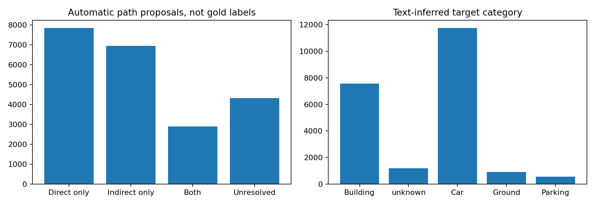
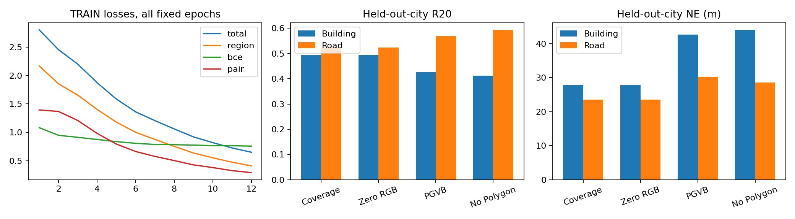
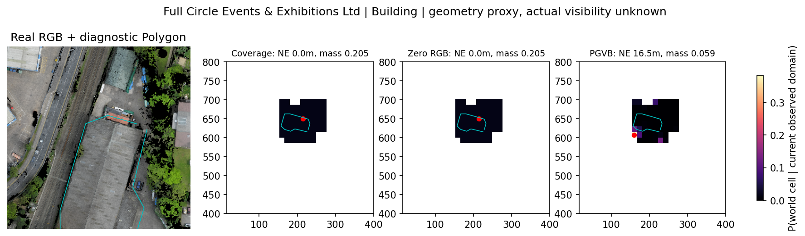
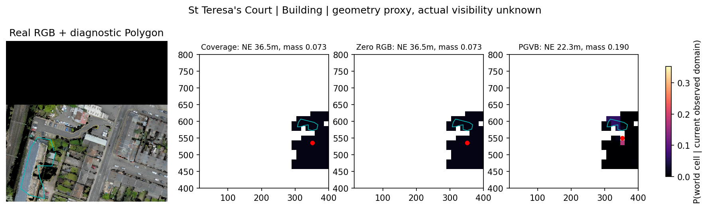
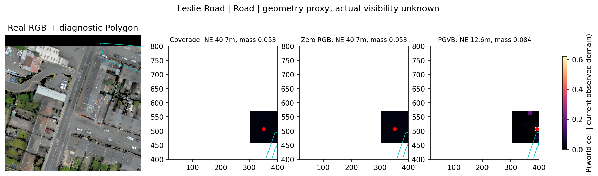
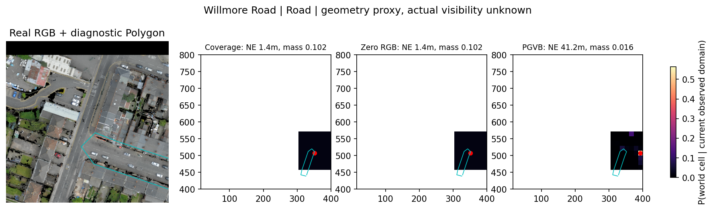
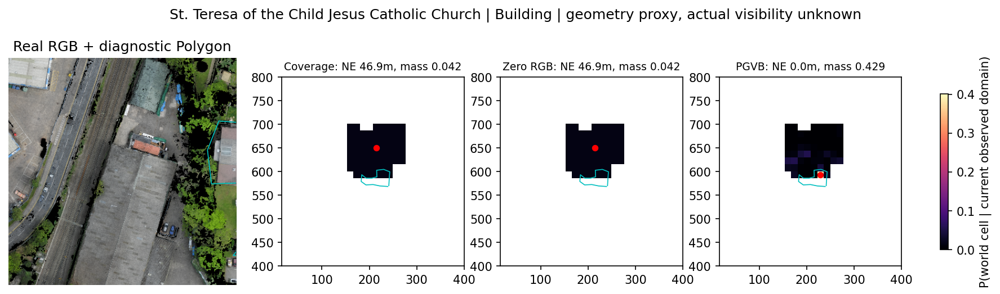
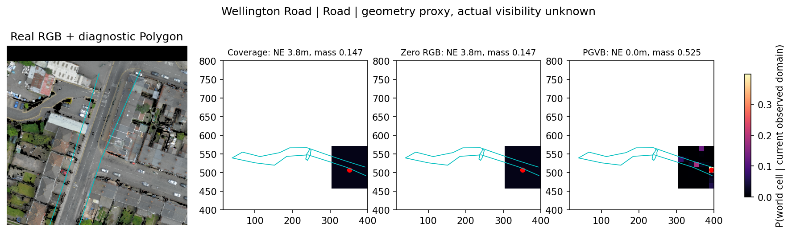

PGVB：城市隔离冻结诊断
没有通过跨城市同图地标区分。全部监督为公开Polygon几何代理，非人工像素GT；图中青线仅事后叠加，未输入模型RGB。
中文报告 | 全部22,002条结构化JSON | 60条人工核验工具 | 24条AI检查（非人工）


birmingham_block_1::full circle events exhibitions ltd | frame 5

原始实际RGBbirmingham_block_1::st teresa s court | frame 3

原始实际RGBbirmingham_block_1::leslie road | frame 0

原始实际RGBbirmingham_block_1::willmore road | frame 0

原始实际RGBbirmingham_block_1::st teresa of the child jesus catholic church | frame 5

原始实际RGBbirmingham_block_1::wellington road | frame 0

原始实际RGB